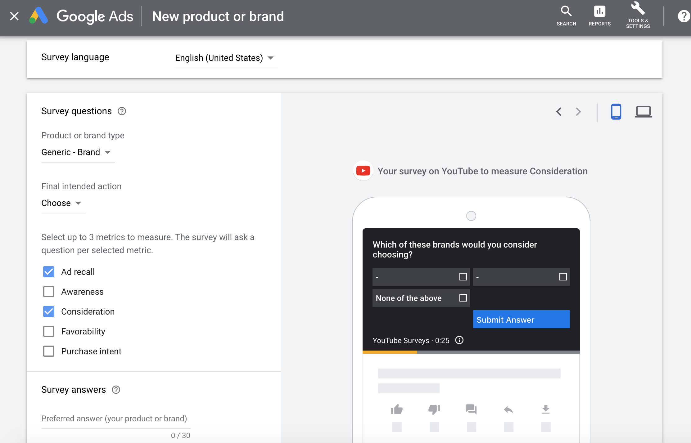
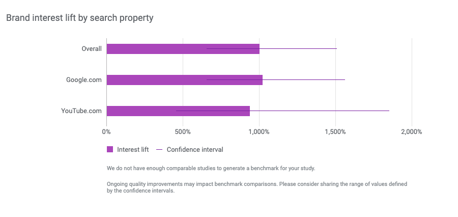
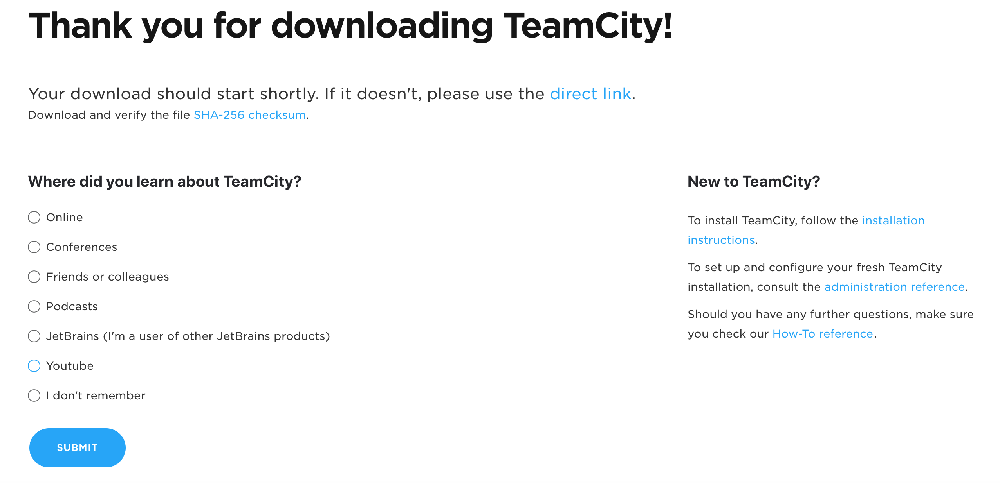

LINKS
May 27, 2020
What is a “brand lift” and how does it work?
YouTube’s brand lift measurement is a powerful tool that helps users to understand how their video ads are influencing audiences; whether they have increased awareness across the target group or boosted purchase intent. The brand lift study (BLS) is one of the few tools which make it possible to better understand how video campaigns contribute to overall brand awareness. BLS is organized in the following way:Running a BLS doesn’t cost the advertiser anything extra, but there are suggested spend minimums. The minimums serve as a baseline for how much money it typically takes to detect brand lift. They are also wary by geographical region and the number of chosen questions.
Back in the old days, to organize a Brand Lift Study you had to contact your Google Ads account manager, wait for the setup and then for the results. Currently, BLS is available in the Google Ads interface, which makes it much easier to run the study using the tool.

Tips before starting a brand lift study.
Metrics to evaluate BLS success.
The great thing about brand lift is that while it’s always a challenge to evaluate brand awareness video campaigns, the BLS provides several metrics to measure results. Let’s briefly examine the major metrics which are available. (I’ve listed the most important metrics, from my point of view, below.)
Absolute Lift: % positive in exposed group - % positive in control group.
According to the Google Ads help article:
This metric shows the difference in positive responses to brand or product surveys between the group of people who saw your ads (the exposed group) and the group withheld from seeing your ads (the baseline group).
If the % positive responses increase from 10% to 30%, the absolute lift would be 30%-10% = 20%.
Relative Lift: % positive in exposed group - % positive in control group / % positive in control group. This measures the percentage difference between the exposed and control group.
The result measures how much your ads influenced your audience’s positive perception of your brand. For example, an increase from 20% to 40% in the positive survey responses between the two surveyed groups represents a relative lift of 100%.
Headroom Lift: absolute lift / (1-% positive in control group).
The impact your ads had on increasing positive feelings towards your brand or product compared to the positive growth potential your brand or product could have gotten. This metric is calculated by dividing absolute lift by 1 minus the positive response rate of the baseline group. For example, an increase from 20% to 40% in the positive survey responses between the exposed group and the baseline groups represents a headroom lift of 25%.
The confidence interval is a crucial aspect of brand lift. It shows a range within which we are sure the truth value is located. The confidence interval is available for all brand lift metrics.
Brand interest.
Together with the BLS, there is also an option to measure the impact that promotion has on organic brand searches (both for google.com and youtube.com). Currently (as of May 2020), the brand interest analysis can be organized only with the help of the Google representative. When measuring it, Google randomly picks a group that has seen a particular ad and a control group that hasn’t see the ad. Google then compares the organic search behavior of both groups, looking at how often they search for keywords related to the brand in question.

How we tried to verify the results on our side.
It is always a great idea to have an additional analysis as well as the standard data suggested by Google. I’ll give an example of how we have organized our additional measurement. For one of our products, we tried to measure brand awareness and the influence that video ads have on this. In addition to the default metrics, we therefore used the following methods:
1. Organic traffic check
According to Google, we saw an increase in brand interest of almost 1000% for one of the top keywords. We tried to see if this had had an impact on our organic search traffic. Unfortunately, we didn’t see a huge increase there. But it’s important to note that the analyzed period coincided with the COVID-19 outbreak. While we noticed a slight decrease in many categories, the product which was the subject of the BLS had held and even slightly improved its organic traffic volume. This can’t be considered as 100% proof that the brand lift did work, but since we can’t separate all the factors which influence the organic search traffic, we can suppose that the absence of a decrease (like we saw for the other categories) is a good sign.
2. Independent research
An independent online quantitative survey was launched approximately a month after the BLS started. While the research was aimed at getting different insights into brand perception and product usage, it also contained one question on sources of awareness about the product. YouTube managed to get to the TOP three of these.
3. Question on the download page
As the third method of the video ad efficiency evaluation, we used a feedback form on the download thank you page. We asked users to pick a source of awareness about the product, as follows:

We noticed that a significant and constant number of users had picked YouTube as an answer, which could also signal that YouTube ads do work.
BLS is a useful and powerful tool to measure the impact of a video ad. If possible, set up additional methods of measurement which can verify BLS findings.
I’m probably leaving out some information. What other tips can you provide about brand lift studies? Share your story in the comments!
LINKS